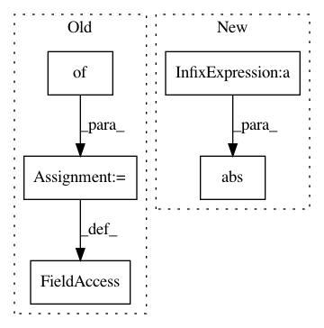

e5f32aaf88d7190cdecb8a6d9cec01054cf3cd9c,pygsp/graphs/nngraphs/nngraph.py,NNGraph,__init__,#NNGraph#Any#Any#Any#Any#Any#Any#Any#Any#Any#Any#Any#,44
Before Change
if plotting:
self.plotting = plotting
else:
self.plotting = {}
self.symmetrize_type = symmetrize_type
N, d = np.shape(self.Xin)
Xout = self.Xin
After Change
raise ValueError("Weight matrix W is not square")
// Symmetry checks
if np.abs(W - W.T).sum():
if symmetrize_type == "average":
W = (W + W.T) / 2.
In pattern: SUPERPATTERN
Frequency: 3
Non-data size: 5
Instances
Project Name: epfl-lts2/pygsp
Commit Name: e5f32aaf88d7190cdecb8a6d9cec01054cf3cd9c
Time: 2015-11-24
Author: lionel.martin@epfl.ch
File Name: pygsp/graphs/nngraphs/nngraph.py
Class Name: NNGraph
Method Name: __init__
Project Name: eth-cscs/reframe
Commit Name: 57a0bb0515d5b80904329fa7b6f5b3edc6fd5b91
Time: 2018-03-20
Author: rafael.sarmiento@cscs.ch
File Name: cscs-checks/apps/lammps/lammps_check.py
Class Name: LAMMPSBaseCheck
Method Name: __init__
Project Name: eth-cscs/reframe
Commit Name: ac0251e0f6a983936ab67f274cd345394f393de6
Time: 2020-04-17
Author: lucamar@cscs.ch
File Name: cscs-checks/apps/quantumespresso/quantumespresso_check.py
Class Name: QuantumESPRESSOGpuCheck
Method Name: __init__